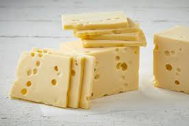
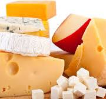

Queijo é um alimento sólido que é feito a partir do leite de vacas, cabras, ovelhas, búfalas e/ou outros mamíferos. O queijo é produzido pela coagulação do leite. Isto é realizado, em uma primeira etapa, pela acidificação com uma cultura bacteriana e em seguida, empregando uma enzima, a quimosina (coalho ou substitutos) para transformar o leite em coalhada e soro. A coalhada sólida é então separada do soro líquido e prensada em forma de queijo. Alguns queijos apresentam também bolores, tanto na superfície externa como no interior.
A origem da palavra queijo parece se encontrar no latim popular caseus. A fonte mais antiga é provavelmente da raiz proto-indo-europeia *kwat-, que significa "fermentar, tornar ácido". Em português, a moderna palavra queijo surgiu por intermédio do espanhol queso, do ano 980, documentado em português sob a forma queso em 1188. Os derivados requesón e requeijão surgem no século XVI. No século XIX, por via culta, usou-se do elemento regular, de composição casei-, nos neologismos caseína, caseiforme, caseoso, etc. As palavras romena caş e a italiana cacio são também de origem latina; por sua vez a palavra em língua malaia e indonésia keju é derivada da portuguesa "queijo".
O queijo é um alimento antigo. Não há qualquer evidência conclusiva indicando onde a produção de queijo teve origem, se foi na Europa, Ásia Central ou Oriente Médio, mas essa prática já havia se propagado na Europa antes mesmo dos romanos e de acordo com Plínio, o Velho, tinha se tornado um sofisticado empreendimento quando do início da formação do Império Romano. Propor uma data para a origem do queijo pode variar desde aproximadamente 8000 a.C. (quando as ovelhas foram pela primeira vez domesticadas), até por volta de 3000 a.C.. O primeiro queijo pode ter sido feito por pessoas no Oriente Médio ou pelos povos túrquicos nômades da Ásia Central. Uma vez que peles de animais e órgãos internos inflados têm, desde os tempos antigos, servidos como recipientes para armazenar uma grande variedade de produtos alimentícios, é provável que o processo de produção do queijo tenha sido descoberto acidentalmente ao estocar o leite em um recipiente feito do estômago de um animal, resultando na transformação do leite em coalhada e soro pela quimosina do estômago. Há uma lenda muito divulgada sobre a descoberta do queijo por um comerciante árabe que costumava usar esse método de estocar leite. A lenda tem muitas variações individuais.
Coagulação: O único passo estritamente necessário para se fazer qualquer tipo de queijo é separar o leite em coalhada sólida e soro líquido. Geralmente isso é feito pela acidificação do leite e adição da quimosina. A acidificação é feita diretamente pela adição de um ácido como vinagre, em alguns casos (paneer, queijo fresco), mas ao invés disso, normalmente são empregadas bactérias. Essas bactérias convertem os açúcares do leite em ácido láctico. As mesmas bactérias (e as enzimas que elas produzem) também desempenham um importante papel na variação dos sabores dos queijos amadurecidos. Na maioria dos queijos empregam-se bactérias como as Lactococci, Lactobacilli, ou Streptococci. Além destas, na Suíça ainda é utilizado a Propionibacter shermani, que produz bolhas de gás de dióxido de carbono durante a maturação do queijo, resultando no queijo suíço ou Emmental com seus característicos furos. Alguns queijos frescos são coagulados apenas pela acidificação, mas a maioria deles utiliza também o coalho. O coalho dá uma consistência mais firme e gelatinosa ao queijo se comparado à frágil textura da coalhada produzida apenas pela coagulação ácida. Também permitem ter um nível mais baixo de acidez —importante porque as bactérias, que dão o sabor característico ao queijo, são inibidas em meios altamente ácidos. Em geral, as variedades de queijos menores, de massa mais mole, fresca são coagulados com uma proporção maior de ácido e menor de coalho, ao contrário dos queijos maiores, de massa mais firme e de maior durabilidade.
